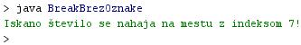

STAVEK BREAK
- Stavek "break" pomeni prekinitev izvajanja.
- Beseda "break" pomeni prekinitev ali prelom.
- Stavek "break" sodi v skupino ukazov za vejitve programov.
- Vejitev programa je toèka, v kateri obstojata dve razlièni možnosti nadaljnega izvajanja programa.
- V Javi poznamo dve vrsti stavka "break": stavek "break" brez oznake in stavek "break" z oznako.
- Stavek "break" brez oznake smo spoznali pri stavku "switch".
- V primeru stavka "switch" je "break" omogoèal preskok izvajanja programa s tistega izmed stavkov "case", ki je ustrezal postavljenemu pogoju, na stavek, ki je sledil stavku "switch".
- S stavkom break smo torej preskoèili vse stavke "case", ki so sledili izbranemu. Tako smo prepreèili njihovo neželeno izvajanje.
- Stavek "break" brez oznake lahko uporabimo tudi za prekinitev vseh vrst zank.
- Primer:
class Break01 {
public static void main(String[] args) {
int[] Tabela = { 32, 87, 3, 589, 12, 1076, 2000, 8, 622, 127 };
int iskani = 12;
int i;
boolean bingo = false;
for (i = 0; i < Tabela.length; i++) {
if (Tabela[i] == iskani) {
bingo = true;
break;
}
}
if (bingo) {
System.out.println("Iskano število se nahaja na mestu z indeksom "+i+"!");
} else {
System.out.println("Iskanega števila "+iskani+" ni v tabeli!");
}
}
}
- V našem zgornjem primeru išèemo število 12.
- To število išèemo v tabeli z imenom "TabelaCelih".
- Število 12 se nahaja v tabeli "TabelaCelih" na petem mestu, èe štejemo od zaèetka tabele.
- Ker se indeksi zaènejo s številom 0, ustreza peto mesto številu 4.
- Število 12 torej najdemo v tabeli "TabelaCelih" na mestu z indeksom "4".
- Stavek "break" v tem primeru prekine izvajanje zanke "for", èe najdemo iskano število.
VAJA 25:
- V okolju za pisanje izvorne kode v jeziku Java, za prevajanje in za interaktivno delo zapiši zgornji program "BreakBrezOznake". Pomagaj si s sliko.
- Kodo lahko tudi kopiraš iz te datoteke in jo prilepiš v okolje, v katerem pišeš programèke. Pozor: koda, ki jo boš kopiral/a, vsebuje eno, dve, tri ali štiri napake. Èe želiš, da bo program deloval, moraš napake odkriti in jih odpraviti.
- Izvorno kodo shrani pod imenom "ImePriimek25.java". ImePriimek je seveda tvoje lastno ime in priimek.
- Datoteko "ImePriimek25.java" prevedi.
- Prevedeno datoteko zaženi, preveri rezultat v interaktivnem oknu in poklièi profesorja, da vidi rezultat.
1. Vprašanja:
1. Kakšna je naloga stavka "break"?
2. Kaj pomeni angleška beseda "break"?
3. Kaj omogoèa stavek "break", èe ga uporabimo v okviru stavka "switch"?
4. Kaj je vejitev programa?
5. Katero število išèe program v vaji te uène enote?
6. Na katerem mestu v tabeli se iskano število nahaja?
7. Koliko znaša indeks iskanega števila?
8. Program v vaji te uène enote preuredi tako, da bo iskal število 10. Kakšen je izpis programa? Rezultat pokaži profesorju.
9. Katero zanko lahko najdemo v vaji te uène neote?
10. Kateri pogojni stavek lahko najdemo v vaji te uène enote?
2. Zapiši od ene do pet kljuènih besed, ki povzemajo vsebino te uène enote.
3. Povezave do dodatnih informacij.
Spletni priroènik proizvajalca programskega okolja Java. To je podjetje Sun.
|